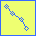
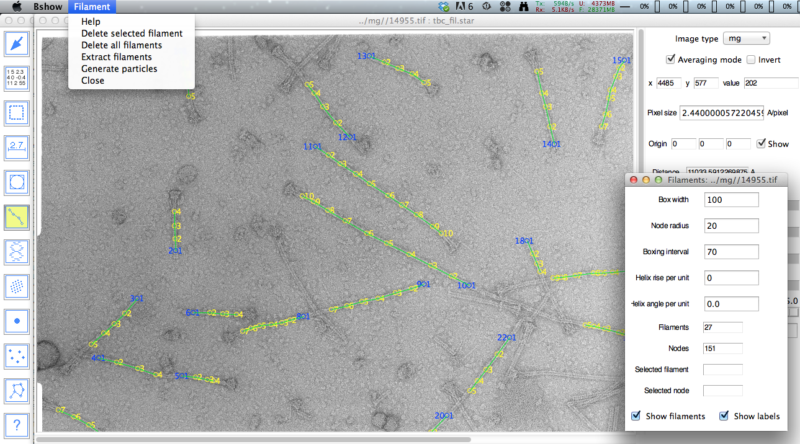

To activate filament picking, select the "Micrograph/Pick filament" menu item or the filament tool (linear linked nodes icon). A "Filament" menu will appear and a new window will open with buttons to manage filament picking. The filament is picked as nodes connected with a spline, defining the center of the filament.
- Filament
- Delete selected filament - delete the filament associated with the selected node.
- Delete all filaments - delete all filaments in memory (no
recovery!).
- Extract filaments - extract and write filament images into a new file.
- Generate particles - create boxes along the filament at intervals.
- Close - close window and deactivate picking operations.
- Parameters
- Box width - width of filament perpendicular to axis and particle box width.
- Node radius - radius of circle indicating nodes.
- Boxing interval - distance between particle box centers.
- Helix rise per unit - translation of unit repeat along the helical axis.
- Helix angle per unit - rotation of unit repeat around the helical axis.
- Filaments - number of filaments picked.
- Nodes - number of nodes picked.
- Selected filament - current selection.
- Selected node - current selection.
- Previous/Next micrograph - buttons to navigate micrographs.
- Graph - display two profiles for the selected filament: the whole filament (blue) and around the selected node (red).
- Radiobuttons to display/hide filaments, labels and profiles.

Mouse controls for filament picking
- Left button: create a node, or move the selected node
- Shift - left button: delete a node
- Right button: start a new filament (also Ctrl-Left)
Clicking the left mouse button in an empty region on the image creates a new node. The linkage of the new node depends on the previously selected node. Clicking the left button inside a node selects it and allows that node to be dragged.
To delete a node, hold down the shift key and click the left button inside the node.
The node radius can be changed in the "Node radius" entry box. This parameter determines the circle radius. Clicking inside this radius selects the node.
Clicking the right mouse button or Ctrl-left mouse button in an empty region on the image creates a new filament.
The profiles plot shows the cross section at the current node (red) and the average cross section over all the nodes (blue). This can be used to center the node on the filament
Extracting the filaments
The "Box width" entry determines the width of the filament image in pixels that will be extracted.
The filament image is extracted by choosing the menu item "Filament/Extract filament". A dialog box requesting a file name for the extracted filament will come up.
Saving and reading curve coordinates
The filament node coordinates can be saved in a STAR file with the main menu "Micrograph" option "Writing parameters" and read back with "Read parameters". This STAR file can be used for extracting the filament images from the micrographs and further image processing.